this is a review of tbate. I really like tbate because the characters are very likeable. Such as Arthur which is the classic Isekai protagonist. However there is a reason why he was dragged from his own world into this new one. Although it isn't explained until the later volumes.
testline 1 2 3 4 5 6 7 8 9 10 11 12 13 14 15 16 17 18 19 20